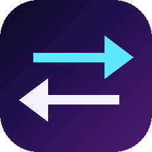

HızlıÇeviriAlmanca okurken pencere değiştirme. Bir metni iki kez Ctrl+C ile kopyala; Türkçesi, kelimenin artikeli ve diğer anlamları masaüstündeki küçük bir kartta belirsin.
⬇ Windows için indirDers çalışırken pencere değiştirmeden, akışı bozmadan.
Çift Ctrl+C ile çeviri kartı açılır. Klavyeni dinlemez; sadece panodaki değişikliğe bakar.
Kelimeye tıkla: der / die / das ve diğer anlamları Türkçe gör.
Kaydettiğin kelimeler cümlelerde yeşil görünür. Çekimli halleri de tanınır.
Daha önce baktığın her şey yerinde; tekrar çevirmene gerek kalmaz.
Masaüstünde en altta duran kartlar. Diğer pencereleri rahatsız etmez.
Kozmik koyu tema ya da yumuşak pastel açık tema. Kartları istediğin boyuta getir.
Yaklaşık iki dakika.
Geçmiş, defter, notlar ve takvim yalnızca senin bilgisayarında tutulur. Çevrilen metin çeviri için DeepL'e gönderilir; başka yere gönderilmez.
Uygulama henüz kod imzalı değil. Windows bu yüzden SmartScreen uyarısı gösterebilir. Dosyayı bu sayfadan indirdiysen "Ek bilgi → Yine de çalıştır" ile devam edebilirsin.
Uygulama ücretsiz. Çeviri DeepL üzerinden yapıldığı için kullanım kotası DeepL hesabının koşullarına bağlıdır.
Şimdilik yalnızca Windows.